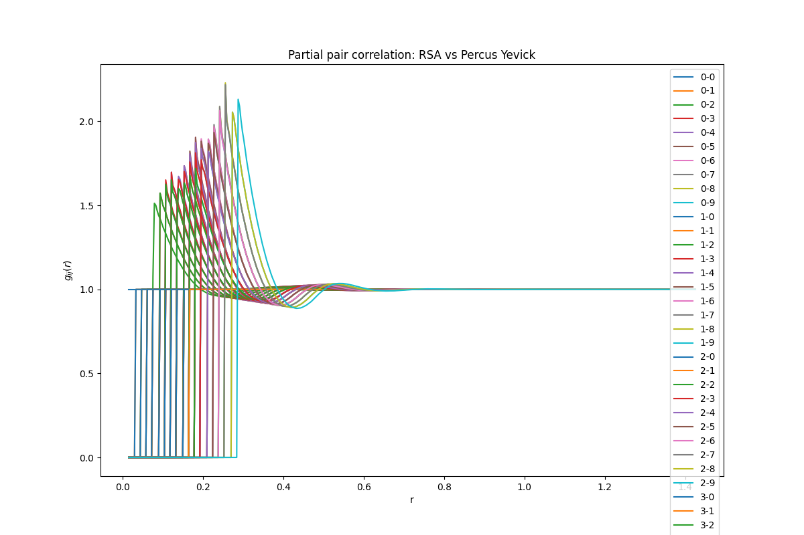
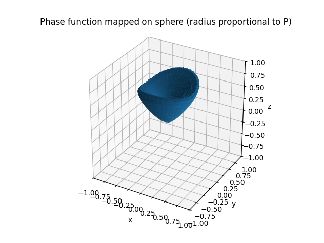

Note
Go to the end to download the full example code.
Scattering Example: Percus Yevick Structure Factor and Phase Function#
Example of Percus Yevick structure factor computation for a polydisperse mixture and corresponding phase function calculation.
import matplotlib.pyplot as plt
import numpy as np
from PackLab import analytical, samplers, scattering
from PackLab.units import ureg
sampler = samplers.NormalRadiusSampler(
mean=100 * ureg.nanometer,
standard_deviation=10 * ureg.nanometer,
bins=10
)
particle_radii, number_fractions = sampler.to_bins()
py_domain = analytical.PercusYevickDomain(
size=100 * ureg.micrometer,
radii=particle_radii,
volume_fraction=0.24,
number_fractions=number_fractions,
)
py_domain.print_bins()
distances = np.linspace(
py_domain.radii.min() * 2,
py_domain.radii.max() * 10,
400,
)
solver = analytical.PercusYevickSolver(
densities=py_domain.particle_densities_per_radius,
radii=py_domain.radii,
wavenumber="auto",
)
py_result = solver.compute(distances=distances)
fig, ax = plt.subplots(1, 1, figsize=(12, 8))
K = len(particle_radii)
for i in range(K):
for j in range(K):
_ = ax.plot(
py_result.distances.to("micrometer"),
py_result.g[i, j],
linewidth=1.5,
label=f"{i}-{j}",
)
ax.set_xlabel("r")
ax.set_ylabel(r"$g_{ij}(r)$")
ax.set_title("Partial pair correlation: RSA vs Percus Yevick")
_ = ax.legend()
plt.show()

Calculate and plot the scattering phase function#
datas = scattering.compute_scattering_amplitudes(
wavelength=150 * ureg.nanometer,
diameters=py_result.radii,
material=1.45,
medium=1.0,
phi=np.linspace(-np.pi / 2, np.pi / 2, 400) * ureg.radian,
polarization=0 * ureg.degree,
)
datas.process()
phi, theta, phase_function = datas.get_phase_function(
densities=py_result.densities,
H=py_result.H,
wavenumber=py_result.wavenumber,
theta_points=150
)
_ = scattering.plottings.plot_phase_function_3d(
phi=phi,
theta=theta,
phase_function=phase_function.to('1 / meter').magnitude,
mode="spherical"
)
plt.show()

Total running time of the script: (0 minutes 17.682 seconds)